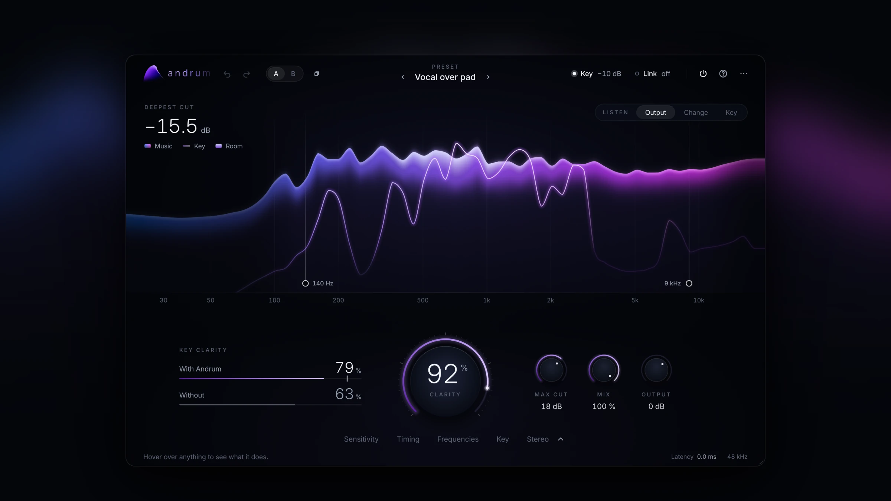
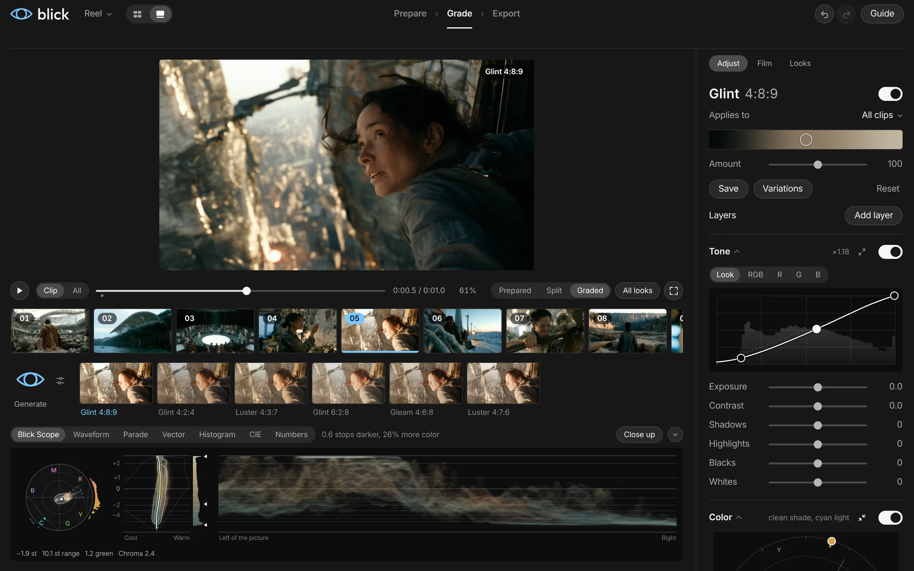

Plugins
Creative tools of my own,
for sound, film and colour.
Creative tools

Andrum
Space for sound.
Audio plugin
Blick
Perfect grades. Created by AI.
AI color gradingAbout Andrum
Make room for the voice.
Andrum turns the music down only where it covers the voice, and only while the voice is there. The mix stays full and the words come through.
For Mac and Windows, free for 7 days.
About Blick
Perfect grades.
Created by AI.
Blick is an intelligent color engine for AI film. It analyzes a clip and creates the cinematic grade that picture needs: tone, color and film. Then it fits the grade to every clip in the cut and renders the film.
For Mac and Windows. Free for 7 days, then €49 a month or €495 a year.